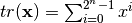
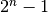
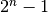
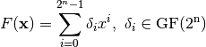
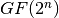
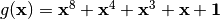
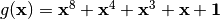
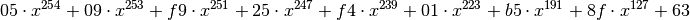

Trace representation¶
Description¶
We identify a Boolean function in n variables with a function from to  and Vector Boolean function in n variables with a function from to .
and Vector Boolean function in n variables with a function from to .
A trace is a function over a finite field defined as: 
Since there is is an isomorphism between  and , it is possible to identify the trace function with a Boolean function in n variables. Analogously, a Vector Boolean function can be identified with trace as follows:
and , it is possible to identify the trace function with a Boolean function in n variables. Analogously, a Vector Boolean function can be identified with trace as follows:
When m=n, we endow with the structure of the field . Any  admits a unique univariate polynomial representation over , of degree at most :
admits a unique univariate polynomial representation over , of degree at most :

A general way to derive this polynomial representation is given by a Lagrange interpolation from the knowledge of the irreducible polynomial of degree n over associated with the field  and the Truth Table of F.
The interpolation attack [JakobsenK:97] is efficient when the degree of the univariate polynomial representation of the S-box over is low or when the distance of the S-box to the set of low univariate degree functions is small. This attack exploits the low degree of the algebraic relation between some input (respective output) and intermediate data to infer some keybits relating the output (respective input) and the intermediate data.
Library¶
A VBF class can be initialized giving its trace f and the irreducible polynomial g with the following methods:
void putirrpol(GF2X& g)
void puttrace(string& f)
To obtain a Vector Boolean function trace representation the following method must be used:
void Trace(GF2EX& f, VBF& F)
and to print the trace representation use the following method:
void print(NTL_SNS ostream& s, GF2EX& f, const long& m)
Example¶
The following program provides the Trace representation over of a Vector Boolean function with Truth Table in a file with extension “.tt”. is constructed with the irreducible polynomial whose corresponding GF2X representation is in a file with extension “.irr”. The class GF2X implements polynomial arithmetic modulo 2 and a polynomial is represented as a coefficient vector.
#include <iostream>
#include <fstream>
#include "VBF.h"
int main(int argc, char *argv[])
{
using namespace VBFNS;
VBF F;
NTL::mat_GF2 T;
GF2X g;
GF2EX f;
int d;
char file[33];
sprintf(file,"%s.irr",argv[1]);
ifstream input1(file);
if(!input1) {
cerr << "Error opening " << file << endl;
return 0;
}
input1 >> g;
F.putirrpol(g);
input1.close();
sprintf(file,"%s.tt",argv[1]);
ifstream input(file);
if(!input) {
cerr << "Error opening " << file << endl;
return 0;
}
input >> T;
F.puttt(T);
input.close();
cout << "The trace representation is " << endl;
f = Trace(F);
d = deg(g);
print(cout,f,d);
return 0;
}
In this cipher,  is constructed with the irreducible polynomial . The inputs of this program would be the Truth Table of in a file with extension “.tt” and the corresponding GF2X representation of in a file with extension “.irr”. The output of the program would be a GF2EX which represents polynomials over GF2E, and so can be used, for example, for arithmetic in :
is constructed with the irreducible polynomial . The inputs of this program would be the Truth Table of in a file with extension “.tt” and the corresponding GF2X representation of in a file with extension “.irr”. The output of the program would be a GF2EX which represents polynomials over GF2E, and so can be used, for example, for arithmetic in :

The coefficients are elements of .